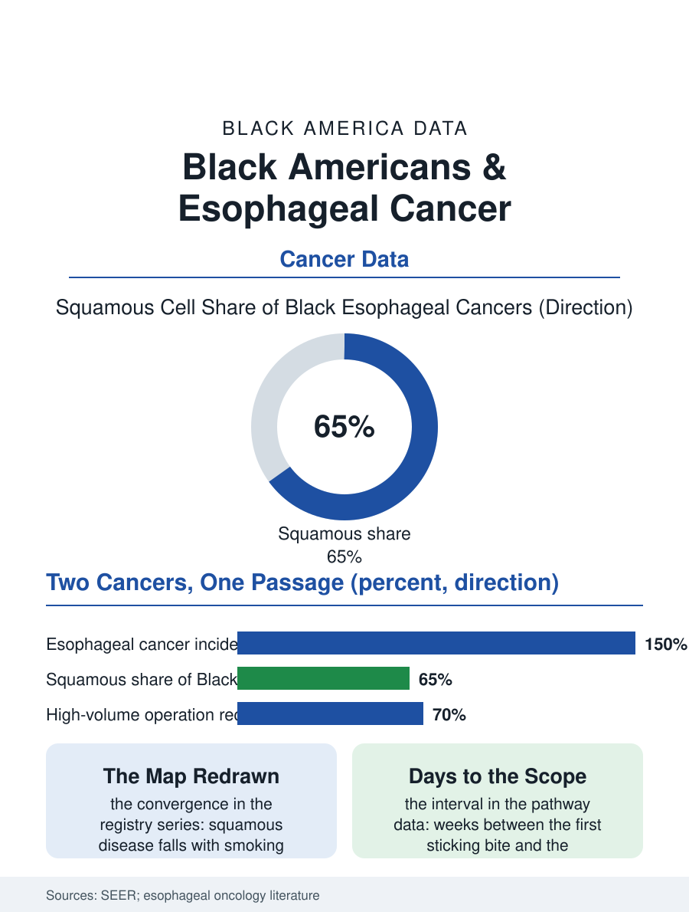

Black Public Health
The Passage: Black Americans and Esophageal Cancer
Two subtypes crossing as risk files shift, one late symptom, and the endoscopy queue deciding the curative window. The esophageal file.

Esophageal cancer in Black Americans carries the highest mortality of the upper gastrointestinal cancers in the file, with a distinctive histology split: the squamous cell cancers, tied to the smoking and alcohol files, dominate the Black incidence in the older data, while the adenocarcinomas of the reflux and obesity files rise in the current era, the two subtypes composing a changing map inside one organ's data. This article reads the esophageal file.
Two Cancers in One Organ
The registry data's split is the file's foundation: the squamous cancers, whose risk stack is the tobacco and alcohol exposures and the nutritional deficiencies of the older cohorts, constitute the majority of the Black esophageal cases in the historical series, while the adenocarcinomas, whose risk stack is the reflux disease and the obesity file's body mass distribution, constitute the majority of the white cases and are rising in the Black data on the obesity file's trajectory, so that the organ's total incidence, higher in Black Americans historically, is converging in the current series as the squamous component falls with the smoking file's decline and the adenocarcinoma component rises with the metabolic file's. The stage file is the bleak constant across both subtypes: the esophageal cancer's presentation, the swallowing difficulty that arrives when the lumen is substantially narrowed, means the diagnosis is late in the great majority in every population, and the Black patient's stage distribution in the SEER tables runs worse still, the symptom's workup delayed by the access file's familiar routes, the endoscopy's availability and the referral's queue, so that the curative window, the surgery and the chemoradiation for the localized disease, is the minority's country in both files. The nutrition file inside the course is the swallowing passage's own arithmetic, the feeding tube and the dietitian's ladder deciding the patient's strength for whatever treatment the stage allows.
The Operation's Geography
The esophagectomy, the operation that removes the esophagus and rebuilds the conduit, is among surgery's most demanding, its mortality and morbidity tied to the center's volume in the literature's clearest relationship, and the Black patient's probability of the high-volume operation and of the multimodality therapy, the chemoradiation before or after the surgery, trails in the hospital and registry data in the pattern of the pancreatic and liver files, with the trial enrollment file's thinness adjoining. The palliative file dominates the majority's course: the stent that opens the swallowing passage, the nutrition and pain management of the advanced disease, the hospice's timing, all distributed by the access map in the file's usual form, with the Black patient's hospice enrollment timing in the claims data running later in the pattern of the whole section's end-of-life file. The screening file is the file's absent chapter: unlike the colon, the esophagus has no population screening program in the general population, the Barrett's surveillance program applying only to the reflux population whose adenocarcinoma risk the guidelines select, a gate whose racial calibration, the reflux file's own distribution, the current research questions in the precise terms of the file's equity audit.
The Swallowing Passage
The esophageal file closes on the symptom's plain meaning, because the inability to swallow is the cancer's presentation in the patient's own language, and its delay in the workup is the file's measurable interval, the weeks between the first sticking food and the endoscope, in which the tumor's stage advances while the patient adapts, eating softer, drinking more, the adaptation masking the progression in the pattern of the other cancers' quiet symptoms. The systems that shortened the interval, the dysphagia pathway that routes the symptom to the endoscopy suite without the primary care queue's detour, post the stage shift the pathway literature predicts, a process answer to a biology that grants no screening. The registries count the cases each year, the Black incidence converging, the Black mortality's excess the stage and treatment files' product. The file's last entry is the first sticking bite, the food that would not go down, in the kitchen of a patient who will spend the next weeks eating around it, while the endoscopy's queue decides whether the operation is still possible, which is the whole of this file in a single swallow, and the reason the interval, measured in days, is the outcome.
More in Black Public Health
Hypertension Among Black Adults: Prevalence, Control, and Consequences
About 55 percent of Black adults have hypertension — the highest rate of any U.S. group. Prevalence, onset, control, and the stroke, heart, and kidney consequences in the data.
Diabetes Among Black Adults: Prevalence and Complications
Nearly one in five Black adults has diabetes, diagnosed or undiagnosed — and its complications fall with particular weight. The CDC data on prevalence, control, and outcomes.
Black Life Expectancy: The Gap at Birth and Its Causes
Black life expectancy at birth is about 73 years, roughly five years below the national figure — the summary measure of every health gap in this section. The CDC data.
Source: National Cancer Institute SEER program; esophageal cancer epidemiology and surgical outcomes literature.